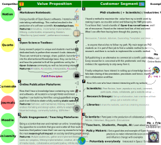

Business model#
I want to create a social entreprise that provides learning and training materials for individuals who want to make the most out of their learning journey. A good learning experience rely on the ability to take notes about a body of knowledge, in a hierarchical way that allow for retrival and complementation of those notes over time. Internet is full of information in various format and yet, most of us still uses pen and paper to build knowledge out of this endless source. The Open Source community has been building tools for years to help with the forever increasing technicity of this world.
This to take markdown notes. The resulting product would be a collection of websites developped, implemented and own by the individual whose purpose is to host and share their knowledge throughout their life. The method I have developped uses only open source softwares Jupyter-Book, Github …
The global aim is to achieve a paradigm schift to break free from the commercial publication system, a parasit that feed from the academic community (cf Manifesto).
- ✍️ Vincent Deguin
- 🕑: 20 min
- 🛠️ 08/04/2024
- Finished: ✅
- Reviewed: ❌
Plan
- Introduction
- Encyclopedia 3.A
- Surrounding Projects
- Canvas
- Desirability
- Feasibility
- Viability
- Testing
- Critical Assumptions
- Test types
Introduction
Encyclopedia 3.A
I started this project around 2022, while I was doing a PhD related to Experimenting with the earliest stages of planet formation at the Open University. At that time, I felt the urgency to share the outputs of my research in a more open and interactive fashion than classical accademic methods allowed, to promote reusability and collaboration
Birth story of the project
Early in my research, I started coding in Python. I found it very hard and counter intuitive. Hopefully, I have been advised to use Jupyter Notebook, an Integrated Development Environment (IDE) whose main feature was to combine Python with Markdown. I could now write and run some code within a text document. At first, it was a way to add comments and make the code less frightening, but very rapidly arised the opportunity to write stories, directly from the data reduction pipeline. This is a great feature for scientific communication and collaboration but how can you publish such outputs? Well, that is the realm of JupyterBook.
Objectives
Note
Extract and link to Note
Note
Extract and link to Construction
Note
Extract and link to Publication
Note
Extract and link to Partage
Test Projects
Canvas
Desirability

{kind=link}
More info
The benefits resulting from following my method can be divided in two (input and output)
Input (Tab A - B)
All in one
Linkable content
Semantic Web
Creative
Lifelong
Empowering
Output (Tab C - D)
Markdown is a lightweight markup language for creating formatted text using a plain-text editor. It allows you to write using an easy-to-read, easy-to-write plain text format and then convert it to structurally valid HTML. I came accross it during my Python deep dive, where I discovered that you could mix Python and Markdown using a web application called Jupyter Notebook. To me, that was a novice python programmer at the time, that was a game changer as I could now code in a step-by-step fashion with text cells between code cells resulting in a self explanatory program (and less frightening I must say, more in Tab B). Later I discovered that Jupyter was in fact a whole ecocystem of open source software, encompassing Jupyter Lab, and more importantly Jupyter-Book. The later is defined as a tool to:
Build beautiful, publication-quality books and documents from computational content
Somehow that sounded like what I wanted to achieve with my PhD thesis, but after one year of use, I think the capabilities extend far beyond this restrictive scope. Indeed, the online format gives me a much broader type of inputs (video, podcasts, animations, hyperlinks …) and have a potentially infinite depth. I can also test some new way of communicate science that have never been experimented before, finding my own style.
Competitors:
Notion: A great note taking, web-scrapping, knowledge base software that also allow IA. It is a good software but I don’t see it as being dedicated for research purposes, at least not in the way I intend to design my plateform. It is a great source of aspiration though.
Obsidian: I need to test it but looks like there is no build option to get a web-site and only allow md files (where jupyter book also allow .ipynb (python notebook))
Links
Markdown
Executable Books
Jupyter-Book
MyST
How do I use
How you can interact
Science must be reproducibile, and there is evidence that this is not always the case (ref). This is main reason why the FAIR Principles Wilkinson2016 have been put in place, in order for the data to be:
Findable
Accessible
Interoperable
Reusable
The paper based publication model is not built for that purpose and very often this is resumed by a link towards a data repository at the end of a scientific paper. However, with my publication model, I can directly link my data and softwares within my notes and this is already a great improvment. But there is also a scope to go much further than this. Indeed, I have the possibility to make my software interactive and directly emebed into the web page.
Note
The interactivity is a feature I tested, but it still need to be perfected
Links
Open Science Tools
Binder
You are currently navigating on my website which is the cover (the top of the iceberg) of a much deeper self own publication plateform.
Competitors / Partners:
SciAni: Extremely pricey but also very qualitative work
Similarily to the value proposition, the customer segment can be divided in two, the people that would use my methodology, and the consumers of the outputs resulting from it.
Explain
Explain
Explain
{kind=link}
{kind=link}

More info
Explain
Explain
{kind=link}
{kind=link}
Sustainable Development Goals - In depth development
Ensure healthy lives and promote well-being for all at all ages

Problems
Most of PhD students feels stress and anxiety …
Solutions
Ensure inclusive and equitable quality education and promote lifelong learning opportunities for all

Problems
Teaching conditions are very different accros the globe.
Solutions
Internet is accessible everywhere and …
Promote sustained, inclusive and sustainable economic growth, full and productive employment and decent work for all

Problems
The current commercial publication system is far from being sustainable and inclusive. Indeed it is pushing for always more article to be published (predatory journals) and is not inclusive (paywall access).
Solutions
Internet is accessible everywhere and …
Build resilient infrastructure, promote inclusive and sustainable industrialization and foster innovation

Problems
Solutions
Knowledge infrastructure
Reduce inequality within and among countries

Problems
The fact that libraries have to pay indecent fees to get access to the scholarly litterature is the cause of a schism in access to articles between rich and poor countries.
Solutions
I publish for free and scientist not only have access but can also participate.
Ensure sustainable consumption and production patterns

Problems
Solutions
Take urgent action to combat climate change and its impacts

Problems
Solutions
Promote peaceful and inclusive societies for sustainable development, provide access to justice for all and build effective, accountable and inclusive institutions at all levels

Problems
Solutions
Strengthen the means of implementation and revitalize the Global Partnership for Sustainable Development

Problems
Solutions
Testing#
Test types
★ ☆ ☆ ☆ ☆
Tell customers what I do, and why I am important
Hp.1 Validate the problems
Explain the problem you are solving. Investigate if your Customer Segments actually experience and care about this problem
 Scientific Publication
Scientific Publication Knowledge / Information
Knowledge / Information- Education
Hp.2 Validate the solution
Explain your solution and key features to this problem. Try to keep it simple. You can test different messaging to see what moves your audience
 Manifesto
Manifesto- Online Format
- Tools
★ ☆ ☆ ☆ ☆
Desk based research to learn from existing materials
Re.1Litterature Review
Re.2 Trend Analysis
- Open Science
Re.3Market Size / Competitor Analysis
Re.4Observation
★ ★ ☆ ☆ ☆
Surveys are great for getting a quick overview, but have limitations (non verbal communication ...).
Su.1 Discovery Survey
Su.2A/B Testing
Su.3Feature Ranking
Su.4Demographic Survey
★ ★ ★ ☆ ☆
Interviews are excellent to get face to face with your customers and really understand their needs and goals(listen more, talk less - ask open ended questions - ask “why” to get to the root).
In.1 Customer Interviews
In.2Focus Groups
In.3Talk To Partners
In.4Talk To Experts
★ ★ ★ ★ ☆
A prototype is a tangible expression of your idea. This can be a drawing, a website, a model or even a performance. The goal is to show your solution rather than explain it. By showing it, customers can interrogate it and provide better feedback.
Pr.1 Build A Website
Pr.2Explainer Video
Pr.3Clickable Wireframe
Pr.4Social Media Campaign
★ ★ ★ ★ ★
The only way to truly validate your idea is to ask your customers to pay for it. It’s only when people are required to put down their cash that they have to 100% commit. Think about the simplest, cheapest thing that you can build/make/do to get a commitment of payment.
Se.1 Online Shop
Se.2Pop-Up
Se.3Presale
Se.4Crowdfunding
Expenditures#
If I am successfull, I would like to buy:
- 3 domain names (for 10 years)
- science-bf-people.org: 10 x 10 = 100 £
- sbfp-vdeguin.com: 10 x 10 = 100 £
- sbfp-vd-teaching.com: 10 x 10 = 100 £
- pay for my OU writing fees (to submit my thesis and pursue my accademic career):
- 565 £
- pay a freelancer to work on a new logo
- 50£
- print visit cards
- 500 cards 50£